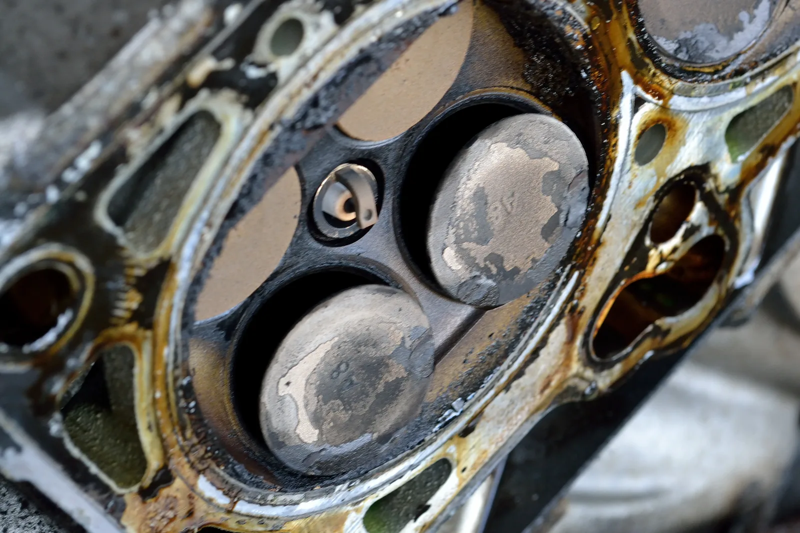
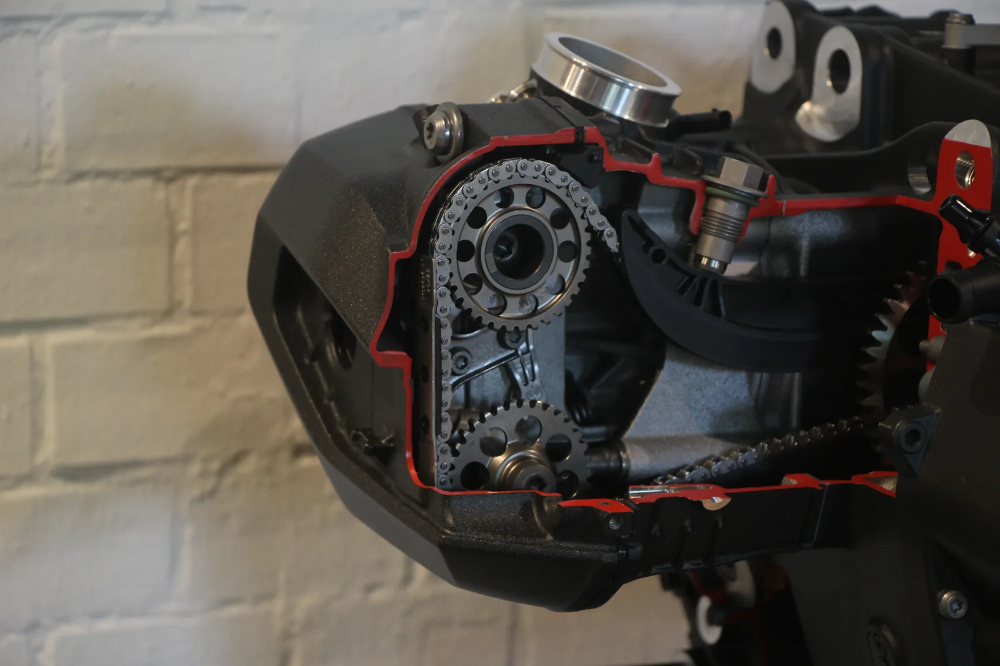
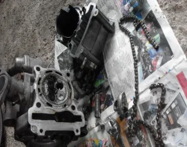

▲ 톱니형 타이밍벨트. 엔진의 밸브와 크랭크축 타이밍을 맞추는 핵심 부품이다 ⓒ Wikimedia Commons (CC BY-SA 4.0)
"타이밍체인 차는 신경 쓸 필요 없다"는 말은 절반만 맞는 얘기다. 벨트보다 훨씬 오래 가는 것은 맞지만, 체인 역시 완전히 손이 안 가는 부품은 아니다.
1. 타이밍벨트 — 저렴하지만 시한부

▲ 타이밍벨트 파손으로 휘어진 흡기 밸브. 인터피어런스 엔진에서는 벨트가 끊어지면 이런 대형 손상으로 이어진다 ⓒ Wikimedia Commons (CC BY-SA 3.0)
고무로 만들어진 타이밍벨트는 일반적으로 6만~10만km, 내구성을 강화한 제품은 12만~15만km 주기로 교체가 권장된다. 문제는 벨트가 끊어졌을 때다. 피스톤과 밸브가 서로 부딪히는 구조(인터피어런스 엔진)라면, 벨트 파손이 곧바로 밸브 변형이나 피스톤 손상으로 이어져 엔진을 통째로 들어내야 하는 상황까지 갈 수 있다. 벨트 자체는 저렴하지만, 교체 시점을 놓쳤을 때의 대가는 훨씬 크다.
2. 타이밍체인 — 반영구적이지만 완전 무결은 아니다

▲ 캠축 구동 체인. 벨트와 달리 정해진 교체 주기 없이 반영구적으로 사용 가능하다 ⓒ Wikimedia Commons (CC BY-SA 4.0)
타이밍체인은 금속으로 만들어져 벨트처럼 정해진 주기 없이 반영구적으로 사용할 수 있다는 것이 최대 장점이다. 하지만 체인을 팽팽하게 당겨주는 텐셔너는 소모품이라, 이 부품이 마모되면 체인이 늘어지면서 특유의 '드르륵' 소음이 나거나 심하면 체인이 이탈할 수도 있다. "체인 차는 평생 안 건드려도 된다"는 말은 이런 부수 부품의 존재를 간과한 것이다.
3. 비용 — 벨트가 싸다고 무조건 유리한가

▲ 분해된 엔진과 파손된 타이밍체인 부품. 체인 관련 수리는 벨트보다 공임이 비싼 경우가 많다 ⓒ Wikimedia Commons (CC BY-SA 4.0)
국산차 기준으로 타이밍벨트 세트(벨트+텐셔너+워터펌프 동시 교체) 비용은 차종에 따라 40만 원에서 90만 원 이상까지 벌어진다. 반면 타이밍체인은 교체 자체는 드물지만, 막상 텐셔너나 가이드 등 부수 부품에 문제가 생기면 엔진을 상당 부분 분해해야 하는 경우가 많아 수리비가 벨트보다 훨씬 비싸질 수 있다. 즉 초기 비용은 벨트가 저렴하지만, 총소유비용 관점에서는 상황에 따라 결과가 달라질 수 있다.
4. 내 차는 어느 쪽인가
같은 제조사, 같은 차급이라도 엔진 세대에 따라 벨트식과 체인식이 섞여 있는 경우가 많다. 정확한 방식은 차량 정비 매뉴얼이나 제조사 고객센터를 통해 확인하는 것이 가장 확실하다. 중고차를 구매할 때도 이 정보를 미리 확인해두면, 예상치 못한 고액 정비비를 피하는 데 도움이 된다.
5. 정리
체크포인트
- 타이밍벨트는 6만~15만km 주기로 반드시 교체해야 한다.
- 벨트가 끊어지면 엔진 대형 손상으로 이어질 수 있어 주기 준수가 중요하다.
- 타이밍체인은 반영구적이지만 텐셔너 등 부수 부품은 소모품이다.
- 내 차가 벨트식인지 체인식인지 미리 확인해두는 것이 좋다.